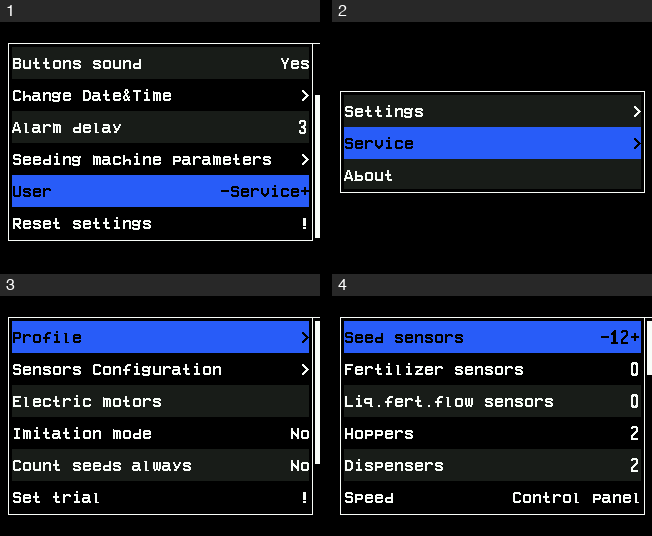
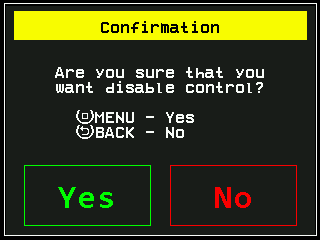

Vérifier le profil et les connexions
Le premier contrôle après l'installation d'un Hectare Mini — le profil correspond-il à la machine, chaque appareil répond-il, chaque capteur est-il sous surveillance — sous forme de procédure avec ce que l'écran affiche à chaque étape.
Le boîtier ne surveille que les appareils que son profil énumère. Les systèmes sont en général livrés avec le profil déjà réglé, mais avant de régler le moindre paramètre, vérifiez qu'il correspond à la machine et que chaque appareil répond. Le contrôle du profil exige le niveau « Service » (service après-vente), qui demande un code PIN — le revendeur le fournit pour votre boîtier ; voir Activer le niveau Agronomist. Les deux autres contrôles ne demandent aucun code.
1. Vérifier le profil
Raccordez tous les appareils au boîtier et alimentez-les comme l'indique le schéma de câblage de la fiche technique du système.
Allumez le boîtier. Après l'écran de démarrage, l'écran d'accueil apparaît.
Passez au niveau « Service » : « MENU » → « Settings » (réglages) → « User » (utilisateur) → « Service », « MENU », code PIN — comme dans Activer le niveau Agronomist.
Appuyez sur « BACK ». Le menu principal réapparaît, avec maintenant « Service ». Sélectionnez « Service » et appuyez sur « MENU », puis sélectionnez « Profile » (profil) et appuyez sur « MENU ». Le menu du profil s'ouvre.

Le chemin vers le profil : Settings au niveau Service, le menu principal, le menu Service, le menu du profil. Lisez le menu du profil, de haut en bas. Chaque rubrique est un type d'appareil avec le nombre que le boîtier attend, par exemple « Seed sensors » (capteurs de graines) ; « Speed » (vitesse) indique le mode de raccordement du capteur de vitesse : « Control panel », « Input device » ou « Input device (2) ». « UP » et « DOWN » parcourent la liste, plus longue que l'écran. Toutes les rubriques : Le profil.

Le menu du profil. Comparez la liste avec la machine et le schéma de câblage. Ne changez rien ici : « BACK » quitte le menu du profil sans enregistrer.
Revenez au niveau « Operator » : éteignez puis rallumez le boîtier, comme dans Activer le niveau Agronomist. Au niveau « Service », le boîtier n'affiche aucune fenêtre d'alarme, et le contrôle suivant en a besoin.
Si le profil ne correspond pas à la machine, réglez-le d'abord : Régler le profil.
2. Vérifier que chaque appareil répond
Attendez quelques secondes sur l'écran d'accueil. Si aucune fenêtre « Connection lost » (connexion perdue) n'apparaît, le boîtier a trouvé tous les appareils du profil.

Quand plusieurs appareils d'un même type ne répondent pas, une seule fenêtre en énumère tous les numéros — ici les capteurs de pression 1 à 3 :

3. Vérifier que chaque capteur est sous surveillance
Un capteur hors surveillance n'est pas surveillé du tout. Son indicateur affiche le signe gris clignotant non surveillé ou !!!! à la place de la valeur ; sous une colonne du schéma, il affiche une case blanche avec ! — voir Indicateurs.

S'il y a un tel capteur, remettez-le sous surveillance :
Sur l'écran d'accueil, maintenez « MENU » enfoncé jusqu'à ce que l'indicateur de vitesse passe sur fond blanc. Le boîtier est en mode de réglage des capteurs. Relâchez la touche.

Le mode de réglage des capteurs, capteur de vitesse sélectionné. Appuyez sur « DOWN » (ou « UP ») jusqu'à sélectionner le capteur hors surveillance. Un capteur de graines est sélectionné quand son numéro, sous la colonne, est sur fond blanc.

Le capteur de turbine sélectionné. Appuyez sur « PLUS ». Le boîtier demande si vous êtes sûr ; appuyez sur « MENU » pour répondre « Yes ». « BACK » répond « No » (non).

La question posée avant de modifier la surveillance d'un capteur. Répétez les étapes 2 et 3 pour chaque capteur hors surveillance. La question n'est posée que la première fois tant que vous restez dans ce mode.
Appuyez sur « BACK » pour quitter le mode de réglage des capteurs.
Activer la surveillance d'un capteur, c'est ce que ce manuel appelle mettre un capteur sous surveillance. Pour en savoir plus : Mettre un capteur sous ou hors surveillance.
Le résultat
Chaque capteur doit être sous surveillance, et aucun indicateur ne doit afficher de croix rouge — le signe d'un appareil qui ne répond pas.
Quand tout est en ordre, l'écran d'accueil affiche chaque appareil dans son gris normal, sans croix rouge ni signe non surveillé :

Passez ensuite aux réglages : Mise en service.
Votre machine fait quelque chose que cette page n'explique pas ? Écrivez à support@agriwelt.com — un ingénieur vous répond.